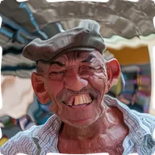

Рябь

Концентрические волны, расходящиеся от центральной точки, с настраиваемой амплитудой, длиной волны и скоростью.
Настройки
| Настройка | Тип | Диапазон | По умолчанию |
|---|---|---|---|
| Центр | Точка (X, Y) | от 0 до 1 | 0.5, 0.5 |
| Амплитуда | Число | от 0 до 100 | 20 |
| Длина волны | Число | от 1 до 200 | 30 |
| Скорость | Число | от 0 до 10 | 2 |